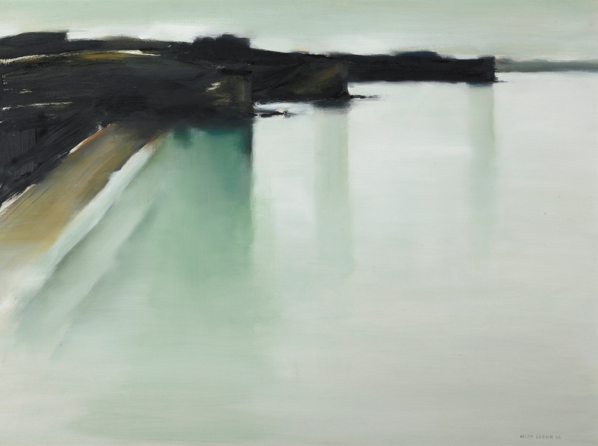

Headlands

Comments powered by Disqus
Reference: Headlands, 1966, Auckland, by Helen Brown. Purchased 1967 from Wellington City Council Picture Purchase Fund. Te Papa (1967-0015-1)
Copyright: Creative Commons BY-NC-ND 3.0 New Zealand licence